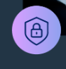
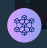

| Talentotechoriente |
| cursos | Descripcion | Enlace |
| Arquitectura en la nube |
La carrera de programación forma a profesionales en el diseño y desarrollo de software, enseñando lenguajes de programación, algoritmos y trabajo en equipo. Los graduados pueden trabajar en diversas áreas tecnológicas, como desarrollo web y aplicaciones móviles. |
|
| Inteligencia artificial | La inteligencia artificial (IA) es un campo de la informática que busca crear sistemas capaces de realizar tareas que normalmente requieren inteligencia humana, como el aprendizaje, el razonamiento y la comprensión del lenguaje. Se utiliza en aplicaciones como asistentes virtuales, reconocimiento de voz y visión por computadora. |
 |
Análisis de datos | El análisis de datos consiste en examinar y procesar datos para extraer información útil y apoyar decisiones. Se utiliza en diversas áreas para identificar patrones y mejorar resultados. |
 |
| Ciberseguridad | La ciberseguridad es el conjunto de prácticas y tecnologías diseñadas para proteger sistemas, redes y datos de ataques, daños y accesos no autorizados. Su objetivo es asegurar la confidencialidad, integridad y disponibilidad de la información en entornos digitales. |
 |
| programación | La programación es el proceso de crear software mediante el uso de lenguajes de programación para escribir instrucciones que las computadoras pueden ejecutar. Se centra en resolver problemas y automatizar tareas. |
|
| Blockchain | Blockchain es una tecnología de registro seguro y transparente que almacena datos en bloques interconectados. Se usa principalmente en criptomonedas y tiene aplicaciones en diversas industrias. |

|